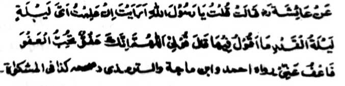

Hadith 7

Miyakathitayan ko A'isha (Radhiallaho 'Anha) a miyatharo iyan: "Ya Rasulollah (Sallallaho 'Alaihi Wasallam)! Opama katawi aken so katatago-an ko Lailatul Qadr antona-ai petharo-on aken ko dalem iyan?” Minisembag iyan: “Tharo-a ngka so 'ALLAHOMMA INNAKA 'AFOWWON TOHIBBOL ‘AFWA FA'FO "ANNI [Ya Allah (Subhaanaho Wa Ta 'ala)! Mata-an a Seka so pephamegay sa Ma-ap, go pekhababaya-an Ka so kama-ap, na ma-api ako Ngka!''.
OSAYAN
Mata-an a giyangka-iya a pangeni na romarangkom, a so tao na pephangenin niyan ko Allah (Subhaanaho Wa Ta'ala) sabap ko kada a tamana o Ma-ap Iyan, sa karila-i ko manga dosa niyan. O makowa ini o tao, na so okit ko Akhirat na miyalinding. Antona-a pen-i mapezinganin o tao? So Imaam Sufyan Thauri (Rahmatullahi ‘Alaihi) na aya lalayon niyan gi-i matharo na sa tao a tamanen niyan a ginawa niyan sa dowa-a [kapamangeni ko Allah (Subhaanaho Wa Ta’ala)] ko tenday angkoto a kagagawi-i na taralebi a di so apiya antona-a Ibaadah. So Ibne Rajab (Rahmatullahi ‘Alaihi) na pitharo iyan a pangeped pen so tao ko manga ped a Ibaadah, ibarat o kabatiya sa Qur’an, go so Sambayang, go so Muraqabah [kadalem a kapamimikiran ko kiyapangaden o Allah (Subhaanaho Wa Ta’ala)], go so manga ped iyan. Giyangka-iya a mori a kepit na aya tanto a benar ago tanto a marani ko miyatharo o Rasulollah (Sallallaho ‘Alaihi Wasallam), sa lagid den o kiya-aloy niyan ko miyanga-oona a Hadith